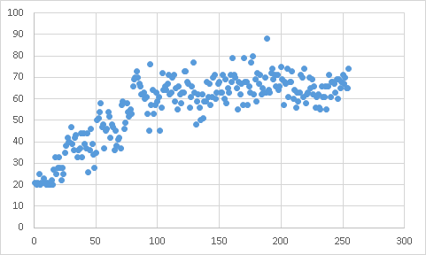
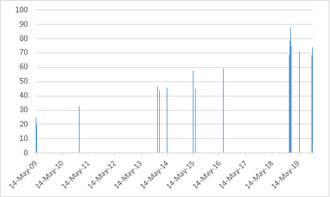

I recently stumbled upon a treasure trove of information. I have been using TypeRacer for quite a long time, below you can see my stats.
Full Average 56.3 WPM Best Race 88 WPM Races Completed 255 WPM Percentile 82.8% Skill Level Typemaster Experience Level Typist 4 Racing Since May 14, 2009
I was also able to extract information on each of the races that I had competed in since 2009. However, I didn't have a paid account, so I had to resort to manually going over each page and scraping the information.
The above chart is all the races I've ever had. You can see how when I first started touch-typing I was at 20 WPM (words per minute) and now I am at around 70 WPM. You can also see the small blip at the top which is my max speed ever: 88 WPM. What kept me engaged all these years in this website against all other typing websites was the races.
Even now when I go to that website, I have to force myself to stop after a while because the rush of racing makes it addicting. The typing excerpts are also quite interesting. It's always fun getting to know a cool song, or another book to be added to the reading list.
Above is a more accurate chart as it displays the true scale of time, whereas the former simply distributed all races uniformly on the x-axis. There were other metrics as well, such as accuracy and position (rank). My accuracy was almost always above 96% so it was pointless to make a chart out of it. As for rank, it doesn't really matter, since as you become faster, the competitors that you get paired with become faster as well. So your rank doesn't improve per race.
Another thing to keep in mind is that this website doesn't really help towards code specific typing. That is, if you are a coder you need a different kind of practice, since coding requires special characters and this website focuses solely on the alphabet. There are websites out there that can help you with programming languages as well, but I personally haven't found any that have come close to the incentive structure of this website. To some extent it does help you towards coding by helping you type faster — the specifics of the language can anyway be learnt over time.